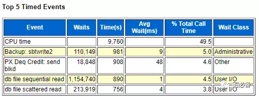

Top 5 Timed Events
原创 2017-07-19 Oracle 宅必备
从今天开始讲解awr报告Top 5 Timed Events部分
之所以是个专题，因为会对常用的一些等待事件进行说明

今天先对一些术语做解释
这部分指的是占用数据库时间靠前的一些事件,主要是等待事件
-
Event 代表事件的名称
-
Waits代表 该事件等待的次数，CPU Time不适用
-
Time(s)代表该事件等待的总时间，单位为秒
-
Avg Wait(ms) 代表平均等待时间(Time(s)/Waits)，单位为毫秒
-
% Total Call Time 代表该事件占整个Call Time的比例，该栏位从10g开始提供
-
Wait Class 代表等待事件的类型，该栏位从10g开始提供
常见的Wait Class 如下
Administrative
由于DBA命令导致的等待(如 重建索引)
Waits resulting from DBA commands that cause users to wait (for example, an index rebuild)
Application
用户程序代码导致的等待(如 锁等待)
Waits resulting from user application code (for example, lock waits caused by row level locking or explicit lock commands)
Cluster
和RAC 资源相关的等待(如gc cr block busy)
Waits related to Real Application Cluster resources (for example, global cache resources such as ‘gc cr block busy’)
Commit
这个等待只包含log file sync
This wait class only comprises one wait event - wait for redo log write confirmation after a commit (that is, ‘log file sync’)
Concurrency 数据库内部资源的等待(如latches)
Waits for internal database resources (for example, latches)
Configuration
由于配置不正确导致的等待(如日志文件大小和共享池大小)
Waits caused by inadequate configuration of database or instance resources (for example, undersized log file sizes, shared pool size)
Idle
空闲等待，一般不需要关注，但有的需要查看,如DB-LINK相关的
Waits that signify the session is inactive, waiting for work (for example, ‘SQL*Net message from client’)
Network
和网络传输相关的等待
Waits related to network messaging (for example, ‘SQL*Net more data to dblink’)
Other
一些不会发生在系统层面的等待
Waits which should not typically occur on a system (for example, ‘wait for EMON to spawn’)
Scheduler
资源管理相关的等待
Resource Manager related waits (for example, ‘resmgr: become active’)
System I/O
后台进程IO相关的等待
Waits for background process IO (for example, DBWR wait for ‘db file parallel write’)
User I/O
重要： 和用户IO 相关的等待(如db file sequential read 等) Waits for user IO (for example ‘db file sequential read’)